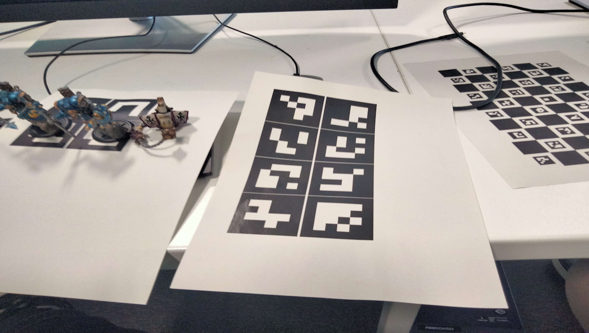
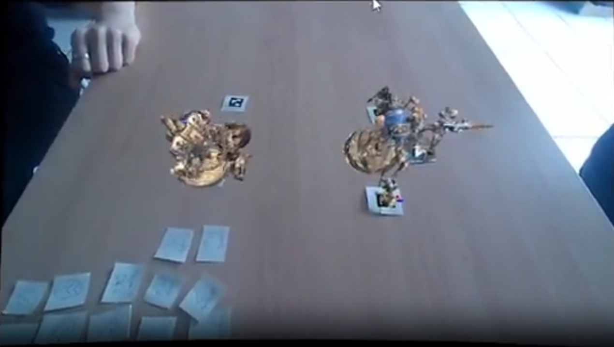

wARgames
Augmented reality game developed at university
During my second year of the Master's course, we had to develop a game in Unity using augmented reality.
Initially, the objective was to create a game that only used scanned Aruco codes.
We decided to push the project further. As a big fan of tabletop wargames, I decided to paint three armies and scan them in 3D using the Polycam app. I then developed the game rules in Unity, and we created a system to detect player commands using the Aruco codes.
The project concluded without any visual elements such as animations or visual feedback for player actions - just console information. Despite that, it was very fun to scan the miniatures and see them appear in the game. I also got the opportunity to use Blender and explore augmented reality.
zz